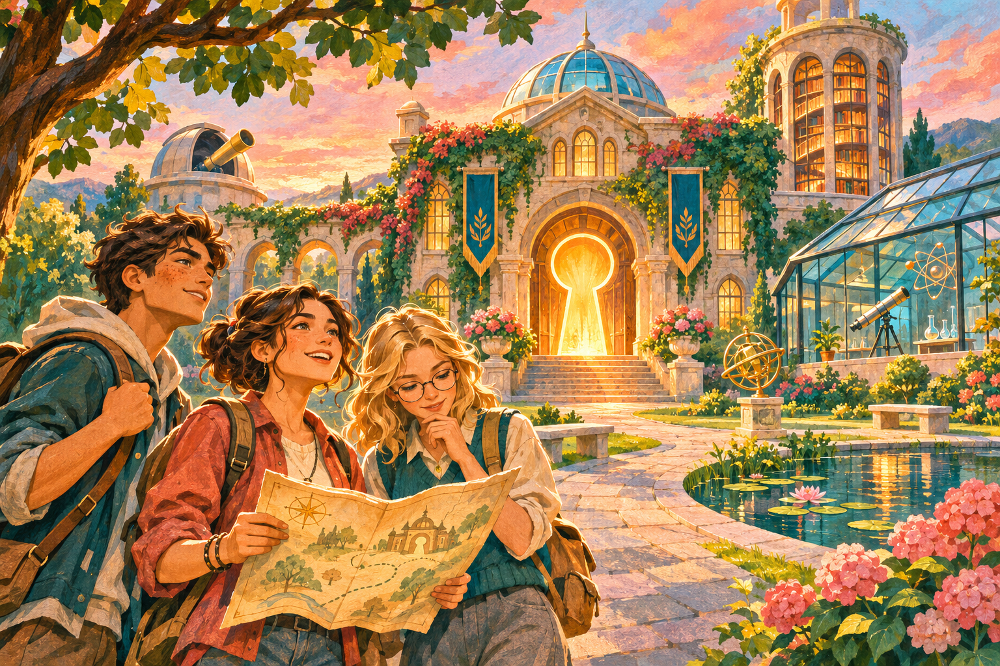
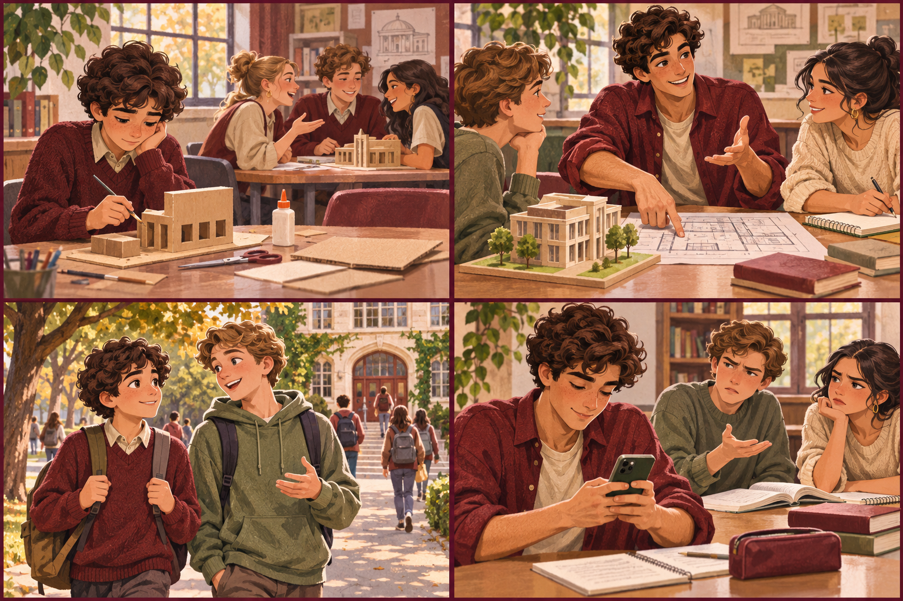
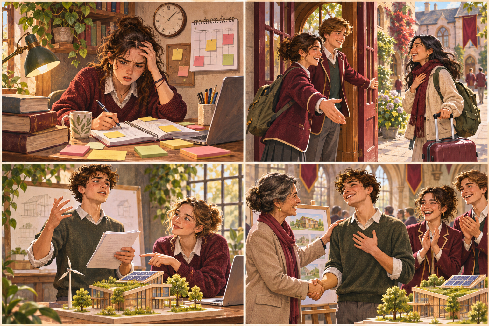

Focus 4 Second Edition · B2 · after Unit 1.1 Vocabulary
The Future Academy
Six stations and twelve original challenges about education, learning paths and your future.
Learn through a story
Each quest has interactive challenges and a separate PDF to open, download and print.

Focus 4 Second Edition · B2 · after Unit 1.1 Vocabulary
Six stations and twelve original challenges about education, learning paths and your future.

Focus 4 Second Edition · B2 · after Unit 1.2 Grammar
Restore a timeline, uncover a dancer’s story and record how your habits have changed. Six original challenges.

Focus 4 Second Edition · B2 · after the complete Unit 1
Prepare the learning lab, welcome visitors and apply to be a student ambassador. Twelve connected challenges across Unit 1.